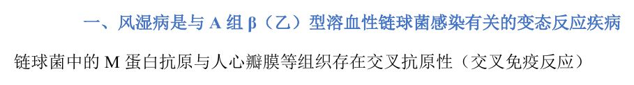
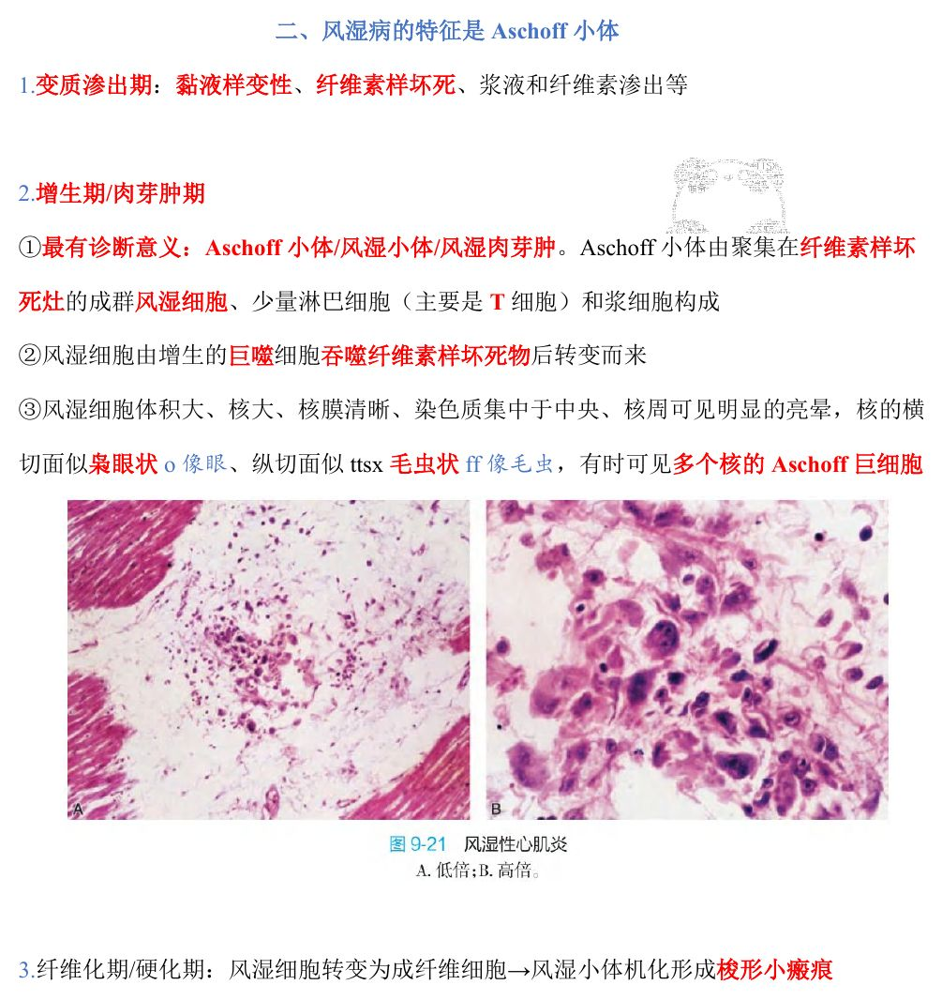
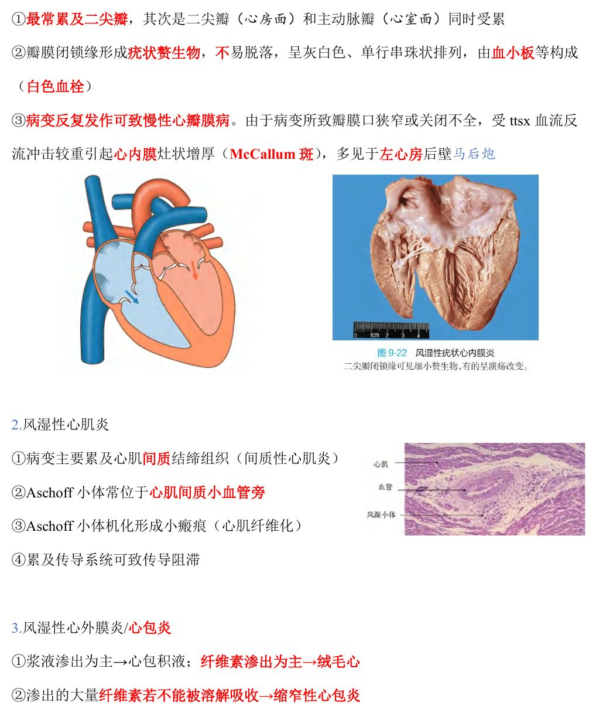
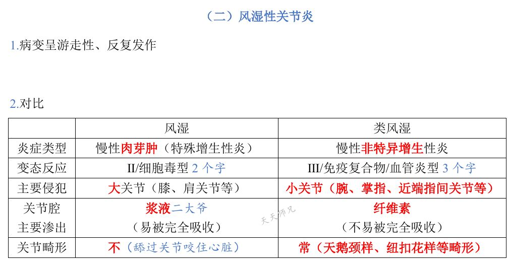
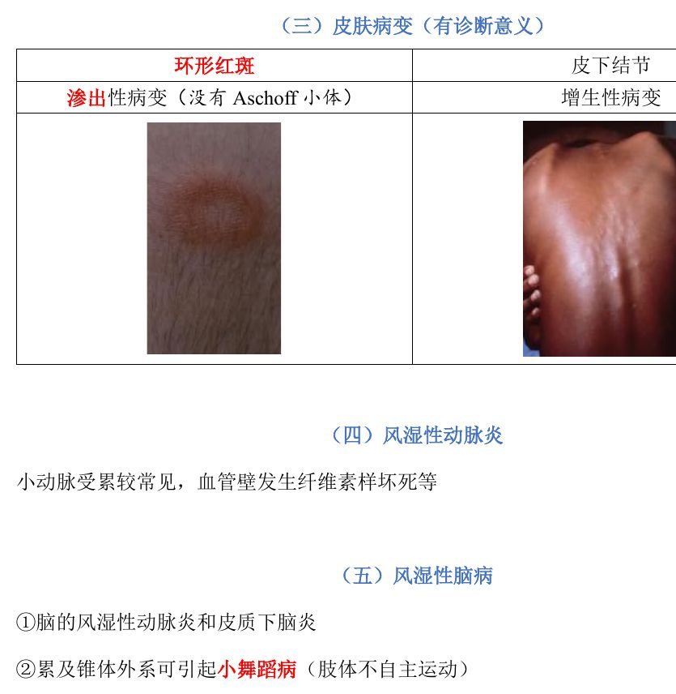
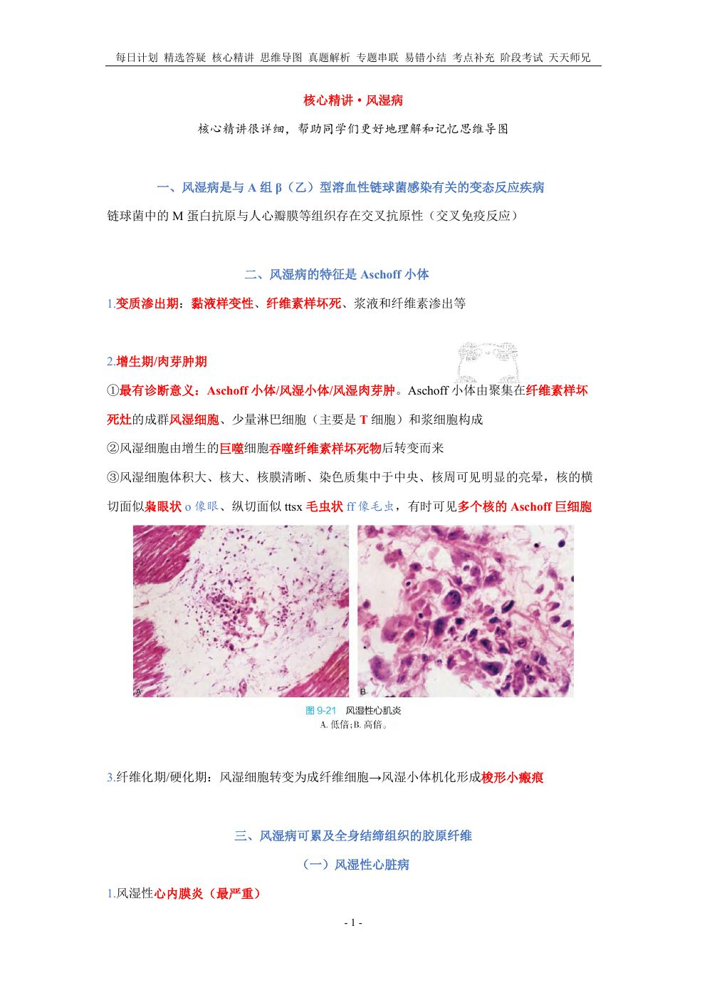
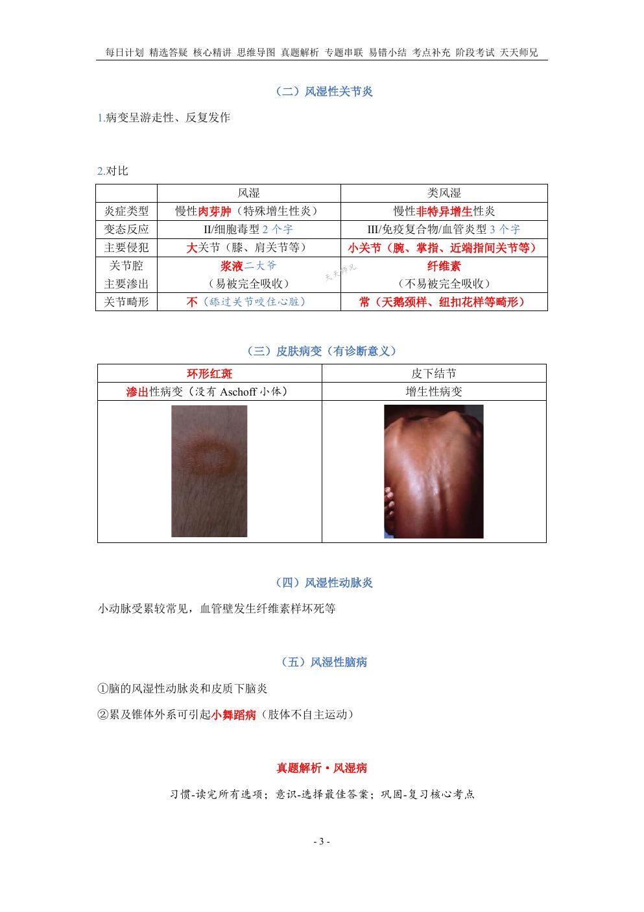
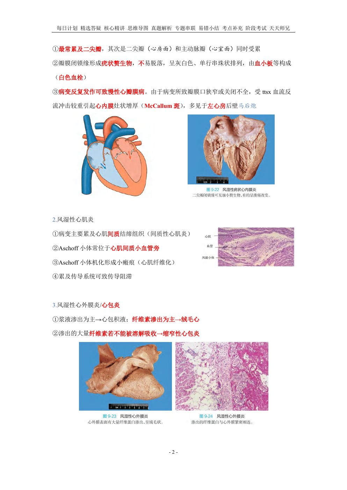

用法：A型题点选项即判；X型题先多选、再点【判卷】；答完自动展开解析。刷完本课再过一遍底部【本课速记卡】，效果最好。
一、概述与基本病变9 题
A型·单选Q1P1 · 概述
风湿病的发生与下列哪种感染有关
答案与解析
答案：D
风湿病是与 A 组 β（乙）型溶血性链球菌感染有关的变态反应疾病：链球菌 M 蛋白与人心瓣膜等组织存在交叉抗原性（交叉免疫反应）。
📖 讲义定位：P1 · 概述

📷 讲义原图 · P1 · 概述
A型·单选Q2P1 · 概述
风湿病的本质是
答案与解析
答案：A
与链球菌感染有关的变态反应性疾病（交叉免疫反应）。
📖 讲义定位：P1 · 概述
A型·单选Q3P1 · 基本病变
风湿病最有诊断意义的病变是
答案与解析
答案：B
Aschoff 小体/风湿小体/风湿肉芽肿最有诊断意义。
📖 讲义定位：P1 · 基本病变

📷 讲义原图 · P1 · 基本病变
A型·单选Q4P1 · 基本病变
Aschoff 小体的主要成分是
答案与解析
答案：C
由聚集在纤维素样坏死灶的成群风湿细胞＋少量淋巴细胞（主要 T 细胞）和浆细胞构成。
📖 讲义定位：P1 · 基本病变
A型·单选Q5P1 · 基本病变
风湿病变质渗出期的改变是
答案与解析
答案：A
变质渗出期：黏液样变性、纤维素样坏死、浆液和纤维素渗出等。
📖 讲义定位：P1 · 基本病变
A型·单选Q6P1 · 基本病变
风湿细胞（Aschoff 细胞）来源于
答案与解析
答案：B
风湿细胞由增生的巨噬细胞吞噬纤维素样坏死物后转变而来。
📖 讲义定位：P1 · 基本病变
A型·单选Q7P1 · 基本病变
风湿细胞核的形态特点是
答案与解析
答案：D
风湿细胞体积大、核大、核膜清晰、染色质集中于中央、核周有明显的亮晕；横切面枭眼状、纵切面毛虫状；有时可见多核的 Aschoff 巨细胞。
📖 讲义定位：P1 · 基本病变
A型·单选Q8P1 · 基本病变
风湿病纤维化期的改变是
答案与解析
答案：C
风湿细胞转变为成纤维细胞→风湿小体机化形成梭形小瘢痕。
📖 讲义定位：P1 · 基本病变
X型·多选Q9P1–3 · 基本病变
在风湿热病变中，可出现 Aschoff 小体的有
答案与解析
答案：BCD
A 错：环形红斑为渗出性病变，没有 Aschoff 小体；皮下结节为增生性病变（可见 Aschoff 小体）。
📖 讲义定位：P1–3 · 基本病变
二、风湿性心脏病7 题
A型·单选Q10P2 · 风湿性心脏病
风湿性心内膜炎最常累及的瓣膜是
答案与解析
答案：D
最常累及二尖瓣（其次可二尖瓣与主动脉瓣同时受累）。
📖 讲义定位：P2 · 风湿性心脏病

📷 讲义原图 · P2 · 风湿性心脏病
A型·单选Q11P2 · 风湿性心脏病
关于风湿性心内膜炎的疣状赘生物，正确的是
答案与解析
答案：A
瓣膜闭锁缘形成疣状赘生物：灰白色、单行串珠状排列、由血小板等构成（白色血栓）、不易脱落。
📖 讲义定位：P2 · 风湿性心脏病
A型·单选Q12P2 · 风湿性心脏病
风湿性心内膜炎反复发作后，心内膜灶状增厚（McCallum 斑）多见于
答案与解析
答案：C
瓣膜口狭窄或关闭不全→血流反流冲击较重部位→心内膜灶状增厚（McCallum 斑），多见于左心房后壁。
📖 讲义定位：P2 · 风湿性心脏病
A型·单选Q13P2 · 风湿性心脏病
风湿性心肌炎的病变特点是
答案与解析
答案：B
风湿性心肌炎为间质性心肌炎；Aschoff 小体常位于心肌间质小血管旁，机化形成小瘢痕；累及传导系统可致传导阻滞。
📖 讲义定位：P2 · 风湿性心脏病
A型·单选Q14P2 · 风湿性心脏病
风湿性心外膜炎渗出以纤维素为主时，心脏外观呈
答案与解析
答案：D
浆液渗出为主→心包积液；纤维素渗出为主→绒毛心；大量纤维素不能被溶解吸收→缩窄性心包炎。
📖 讲义定位：P2 · 风湿性心脏病
X型·多选Q15P2 · 风湿性心脏病
风湿性心脏病的病变包括
答案与解析
答案：BCD
心脏三种病变：心内膜炎、心肌炎、心外膜炎；关节炎不属于心脏本身病变（A 错）。
📖 讲义定位：P2 · 风湿性心脏病
X型·多选Q16P2 · 风湿性心脏病
关于风湿性心内膜炎赘生物，下列叙述正确的有
答案与解析
答案：ABD
C 错：风湿性赘生物不易脱落。
📖 讲义定位：P2 · 风湿性心脏病
三、关节、皮肤与其它7 题
A型·单选Q17P3 · 风湿性关节炎
关于风湿性关节炎，下列叙述正确的是
答案与解析
答案：C
游走性、反复发作、大关节（膝、肩等）；关节腔为浆液渗出（易完全吸收）、不畸形。
📖 讲义定位：P3 · 风湿性关节炎

📷 讲义原图 · P3 · 风湿性关节炎
A型·单选Q18P3 · 关节炎对比
风湿病的变态反应类型属于
答案与解析
答案：B
讲义对比表：风湿＝Ⅱ 型（细胞毒型）；类风湿＝Ⅲ 型（免疫复合物/血管炎型）。
📖 讲义定位：P3 · 关节炎对比
A型·单选Q19P3 · 关节炎对比
风湿性关节炎关节腔的渗出物主要是
答案与解析
答案：A
风湿＝浆液（易完全吸收）；类风湿＝纤维素（不易被完全吸收）。
📖 讲义定位：P3 · 关节炎对比
A型·单选Q20P3 · 关节炎对比
关于关节畸形，正确的叙述是
答案与解析
答案：D
风湿：不畸形（『舔过关节、咬住心脏』）；类风湿：常致畸形（天鹅颈样、纽扣花样）。
📖 讲义定位：P3 · 关节炎对比
A型·单选Q21P3 · 皮肤病变
风湿病皮肤病变中，属于渗出性病变（无 Aschoff 小体）的是
答案与解析
答案：B
环形红斑＝渗出性病变（没有 Aschoff 小体）；皮下结节＝增生性病变。
📖 讲义定位：P3 · 皮肤病变

📷 讲义原图 · P3 · 皮肤病变
A型·单选Q22P3 · 风湿性脑病
小舞蹈病的发生与下列哪项有关
答案与解析
答案：C
风湿性脑病：脑的风湿性动脉炎和皮质下脑炎；累及锥体外系可引起小舞蹈病（肢体不自主运动）。
📖 讲义定位：P3 · 风湿性脑病
X型·多选Q23P3 · 皮肤病变
关于风湿病的皮肤病变，下列叙述正确的有
答案与解析
答案：ABC
D 错：皮下结节为增生性病变；皮肤病变对风湿病有诊断意义。
📖 讲义定位：P3 · 皮肤病变
本课速记卡
风湿病（概述）
- 与 A 组 β（乙）型溶血性链球菌感染有关的变态反应疾病（交叉免疫反应：M 蛋白 ↔ 心瓣膜）
- 最有诊断意义：Aschoff 小体（风湿小体）＝风湿细胞＋少量 T 淋巴细胞＋浆细胞
- 风湿细胞←巨噬细胞；核横切枭眼状、纵切毛虫状（＋Aschoff 巨细胞）
- 三期：变质渗出期→增生期（肉芽肿）→纤维化期（梭形小瘢痕）
风湿性心脏病
- 心内膜炎（最严重）：二尖瓣最常见；闭锁缘疣状赘生物（单行串珠状、白色血栓、不易脱落）→慢性心瓣膜病；McCallum 斑（左心房后壁）
- 心肌炎：间质性；Aschoff 小体位于心肌间质小血管旁；累及传导系统→传导阻滞
- 心外膜炎：浆液→心包积液；纤维素→绒毛心→缩窄性心包炎
风湿 VS 类风湿（对比）
| 项目 | 风湿 | 类风湿 |
|---|
| 炎症类型 | 慢性肉芽肿（特殊增生性炎） | 慢性非特异增生性炎 |
| 变态反应 | Ⅱ 型（细胞毒型） | Ⅲ 型（免疫复合物/血管炎型） |
| 主要关节 | 大关节（膝、肩等） | 小关节（腕、掌指、近端指间） |
| 关节腔渗出 | 浆液（易完全吸收） | 纤维素（不易完全吸收） |
| 关节畸形 | 不 | 常（天鹅颈样、纽扣花样） |
皮肤、动脉、脑
- 皮肤（有诊断意义）：环形红斑（渗出性，无 Aschoff 小体）／皮下结节（增生性）
- 动脉炎：小动脉受累较常见、纤维素样坏死
- 脑病：脑的风湿性动脉炎和皮质下脑炎；累及锥体外系→小舞蹈病
📚 网站题库（导入）4 组 · 8 题
说明：本部分为外部题库导入（来源：「西综题库」网站 · 病理学），题干、选项与答案保留原样；标注「教师补充」的答案未经讲义逐项复核。做题方式：点字母选择（多选后点【判卷】；答案可点开「答案与出处」查看）。
风湿病的基本病变与Aschoff小体匹配 / 归类
A 黏液样变性
B Aschoff小体
C 浆液和纤维素渗出
D 梭形小瘢痕的形成
E 纤维素样坏死
网站题W1第7讲 · 第1页
变质渗出期
答案与出处
答案：ACE
📖 第7讲 · 第1页

📷 讲义原图 · 第7讲 · 第1页
网站题W2第7讲 · 第1页
增生期
答案与出处
网站题W3第7讲 · 第1页
纤维化期
答案与出处
网站题W4第7讲 · 第1页
风湿病最有诊断意义的是
答案与出处
风湿B型题
A 关节腔主要渗出浆液
B 变态反应为III型
C 没有关节畸形
D 炎症类型为慢性肉芽肿（特殊增生性炎）
E 关节腔主要渗出纤维素
F 主要侵犯大关节
G 炎症类型为慢性非特异增生性炎
H 常有天鹅颈样，纽扣花样等关节畸形
I 主要侵犯小关节
J 变态反应为II型
K 有环形红斑
L 有皮下结节
M 手关节尺侧偏斜
网站题W5第7讲 · 第3页
风湿
答案与出处
答案：ACDFJKL
📖 第7讲 · 第3页

📷 讲义原图 · 第7讲 · 第3页
网站题W6第7讲 · 第3页
类风湿
答案与出处
风湿病的基本病变有多项选择教师补充
A 黏液样变性
B 纤维素样坏死
C 炎细胞浸润
D 脓肿形成
网站题W7第7讲 · 第1页
风湿病的基本病变有(多选)
答案与出处
风湿病的病理变化有多项选择教师补充
A McCallum 斑
B 环形红斑
C 绒毛心
D Osler 小结
网站题W8第7讲 · 第2页
风湿病的病理变化有(多选)
答案与出处
答案：ABC
📖 第7讲 · 第2页

📷 讲义原图 · 第7讲 · 第2页